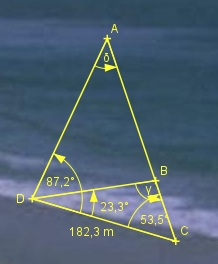

Aufgabe 183 2 Punkte A und B sind unzugänglich. Um ihre Entfernung zu bestimmen, legen die Vermesser von einem Punkt C auf der Verlängerung von AB aus eine Standlinie von 182,3 m zum Punkt D fest. Peilwinkel: ACD = 53,5°, ADC = 87,2° und BDC = 23,3°. Wie groß ist die Entfernung AB?

γ = 180° - 53,5° - 23,3° = 103,2° δ = 180° - 53,5° - 87,2° = 39,3° Im Dreieck DCB: Fall SWW: Sinussatz: 182,3 m DB ---------- = ----------- | *sin 53,5° sin γ sin 53,5° 182,3 m * sin 53,5° DB = ---------------------- = sin 103,2° 182,3 m * 0,8039 = ------------------ = 150,5 m 0,9736 Im Dreieck DBA: Fall SWW: Sinussatz: DB AB -------- = ---------------------- | *sin 63,9° sin δ sin (87,2° – 23,3°) 150,5 m * sin 63,9° 150,5 m * 0,898 AB = --------------------- = ----------------- = sin 39,3° 0,6334 = 213,4 m